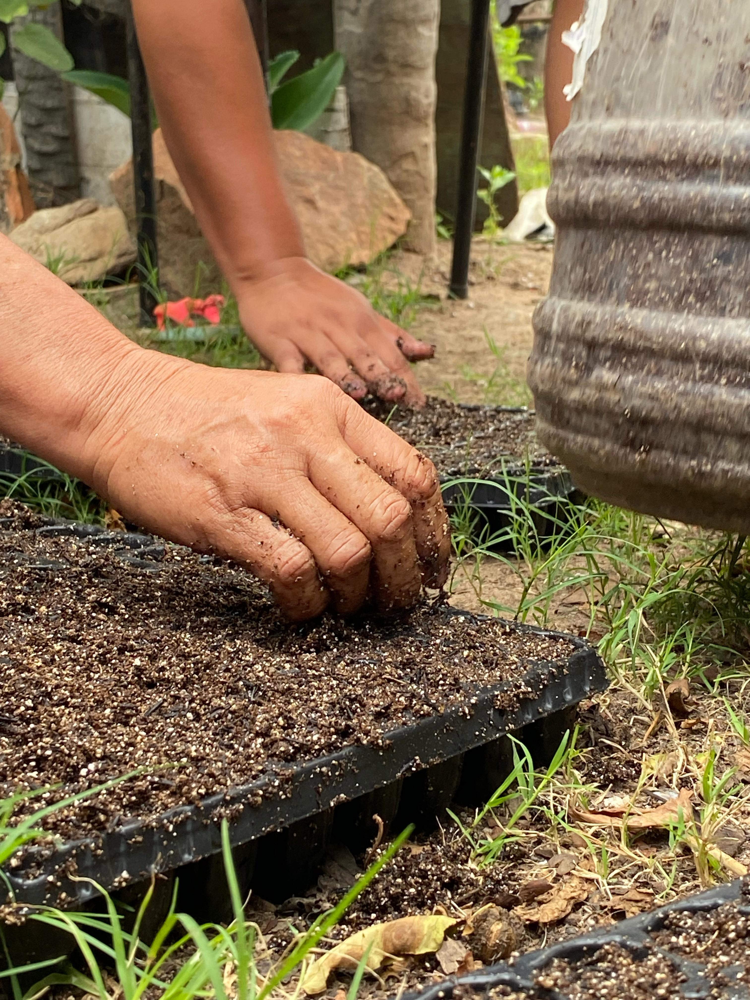
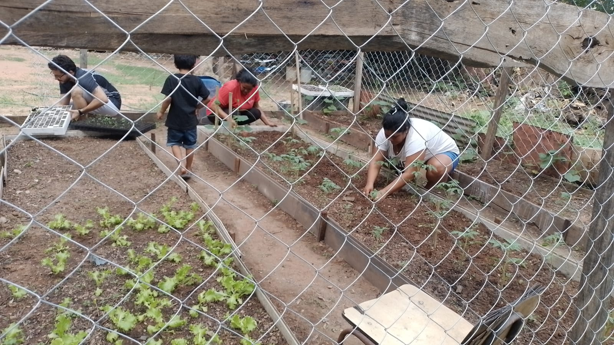
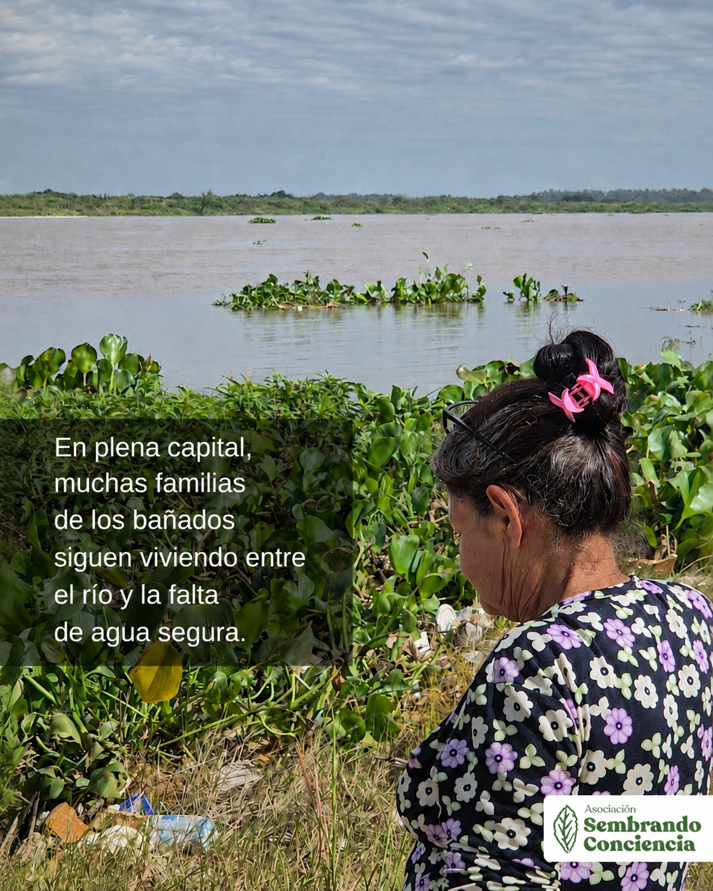

Bañados de Asunción · Paraguay
Sembramos conciencia,
cultivamos futuro.
Cada pequeña acción cuenta. Sembrar conciencia es el primer paso hacia el cambio.
Conocé nuestra historia
Bañados de Asunción · Paraguay
Cada pequeña acción cuenta. Sembrar conciencia es el primer paso hacia el cambio.
Conocé nuestra historia
Sembrando Conciencia es una asociación civil paraguaya cuyo trabajo comenzó en 2020 y que se formalizó en 2022. Nuestro compromiso nació en los Bañados de Asunción, un territorio vivo y diverso que enfrenta desafíos profundos de acceso a derechos fundamentales.
Trabajamos junto a las comunidades de Banco Hovy, Virgen de Luján, San Cayetano, San Ignacio y Divino Niño en iniciativas de alimentación, agua, educación ambiental y organización comunitaria.
Ver másAbordamos las necesidades de las comunidades desde una mirada integral, articulando alimentación, agua, ambiente, educación y participación.
Huertas comunitarias y escolares, producción agroecológica y formación en alimentación saludable junto a familias de los bañados.
Talleres en escuelas y espacios comunitarios para construir conciencia sobre el ambiente, el territorio y los derechos.
Iniciativas de separación y reciclaje de residuos que fortalecen capacidades locales y generan valor en la propia comunidad.
Acompañamiento en el acceso al agua en Banco Hovy y otras comunidades, donde el derecho al agua sigue siendo una lucha cotidiana.
Fortalecimiento de capacidades y organización comunitaria para que las propias comunidades sean protagonistas de su desarrollo.


Cifras preliminares acumulativas. Período de reporte y validación pendiente de confirmación institucional.
Nuestras acciones se desarrollan en comunidades de los Bañados de Asunción, donde acompañamos procesos de largo aliento junto a vecinos y vecinas.


Registros de lo que sucede en las comunidades donde acompañamos.

6 de marzo de 2025
La Red de Jóvenes se reunió en un campamento para fortalecer vínculos y continuar construyendo desde los territorios donde Sembrando Conciencia trabaja.
Leer →
22 de marzo de 2025
En plena capital, muchas familias siguen viviendo entre el río y la falta de agua segura. Esta es la realidad que Sembrando Conciencia acompaña en los Bañados de Asunción.
Leer →Estamos construyendo algo desde las comunidades. Si querés saber más, colaborar o articular, escribinos.